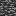
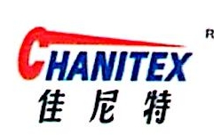
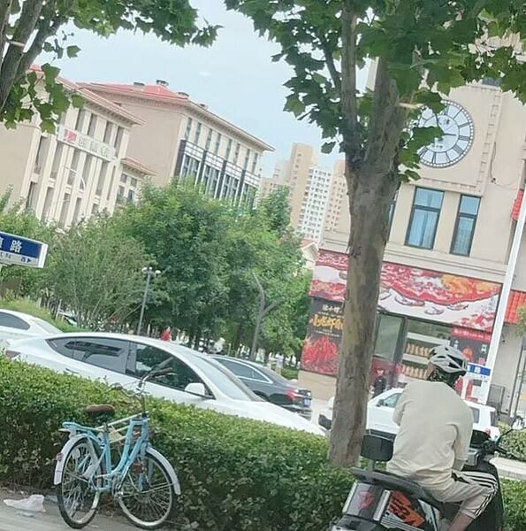
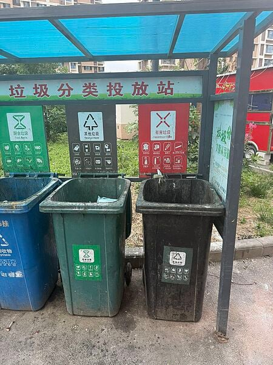
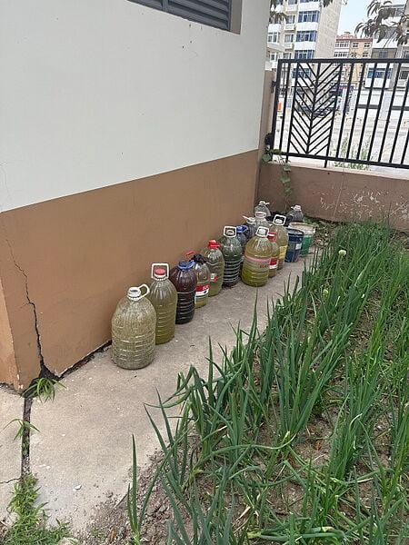
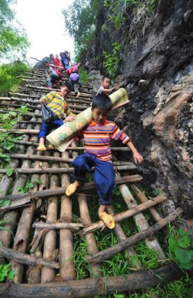

请及时保存冥壬堂的相关资料，包括但不限于文章、音视频素材、语录、美图等等，以免被本页记载的高雅人士自我幻想入或被不可抗力与其他未知因素幻想入。
YSM开源事件/冥壬堂专注于收集 YSM开源事件中各路人马的奇异搞笑申必事迹，并用类似于高雅人士的口吻娓娓道来，以此让各位一般通过路人看清 YSM 社区内某些晚期智人类似物的真实面目。
烈鸟比百
| 页面名称 | |
|---|---|
| 姓名 | 烈鸟比百 |
| 常用ID | 烈鸟比百、Aigoblin |
| 职业 | 野狗（自称）、荒野大嫖客 |
| 能力 | 超级拼装、🈷️ |
| 特长 | 制作 R-18 高雅模型 |
| 必杀技 | 狗符「但我就是不要脸啊」 |
| 硬度 |  |
| 所属 | R-18 模型作者 |
烈鸟比百，又称鸟圣、鸟神、鸟出、鸟先生，是 YSM 社区第一带恶人、R-18 模型作者群体代表人物，他的恶名从 YSM 社区到成都市某大保健无人不知无人不晓。
初见端倪
自打 2022 年年中开始，鸟先生的 Bilibili 投稿中便开始出现 Blockbench 相关视频。可见他此时已经开始使用 Blockbench 进行建模工作。2023 年 1 月 5 日起，鸟先生开始为明日方舟、原神等二游角色制作 YSM 模型。仅在不到一个月后，2023 年 2 月 26 日，鸟先生发布了第一个高雅作品——原神诺艾尔可脱模型。此后便有如龙场悟道般快速的机器进入 R-18。2 月 26 日，鸟先生发布了《【模型分享】可脱互动式模型》的赛博站街视频，并在视频最后展示了长达 [铯-133原子基态两个超精细能级跃迁辐射周期的 441246324960 倍持续时间] 的高雅不堪的神秘片段。此视频由于对齐了 Bilibili 平台广大炫鸭翼需求端的颗粒度，迅速获得泼天富贵，至今仍是鸟先生播放量最高的视频。
此后，鸟先生迅速意识到了炫鸭翼是第一生产力，开始源源不断地产出带有情感调节功能的 YSM 高雅模型。
超级拼装
与此同时，鸟先生深知复制粘贴的重要性，开启了大学习时代。他独创性的 LNBB Public License 重新定义了"盗窃"与"原创"。
最速跑路传说
鸟先生曾入职映素工作室长达一个月之久，在发现卧槽这里的入怎么一个个那么没有物质追求后以"个人原因"为理由光速跑路。值得一提的是在鸟先生如闪电般归去后不久，他的 YSM 模型中便开始出现了大量映素内部严禁外传的学习资料。鸟先生入职映素并一瞬脱离的真实原因我们暂且蒙古。
超强学习能力
然而即便鸟先生离开了映素，他与映素间千丝万缕的联系（指单方面借用映素工作室的学习资料）仍未消失。此人曾经有过如下的学习佳绩：
- 盗窃 @伊洛是哥斯拉嘛 及其他作者的模型并用于商业服盈利，东窗事发后试图拿钱捂嘴被拒绝。
- 长期对 @Coffish 及其他映素工作室成员的特效、模型等进行善意二创后盈利，甚至用于商单制作；挨打立正、下次还敢。
- 公开在 Blockbench 模型交流群中展示自己的抄袭行为，甚至现场演示抄袭过程、以此为荣。
- 集大成之作品：奴隶少女希尔薇 YSM 模型。
值得一提的是，希尔薇的作者严禁任何形式的二创盈利，而鸟先生不仅公开将其制成 YSM 模型圈钱，模型素材也依旧是不知从何而来的映素全家桶 +++++。甚至在宣布所谓"开源"时也将此模型用于封面引流，实乃无耻至极。就连 943 本人都对此相当不满。
朴昌大神
鸟先生通过善意复刻、善意借用、善意涉黄、善意圈钱等手段获利近百万人民币，并将大量不当得利用于满足人类的原始欲望，是圈内人尽皆知的大保健常客。
2024年12月29日，鸟先生公然在模型作者交流群中发表"想让主播全国可飞居然要上总督才行"随后又称"接近两万，便宜"。可见其圈米数量之多。
当日晚些时候，一位 [不便明说的特殊行业从业者] 通过 Bilibili 私信鸟先生，鸟先生随手将截图转发至作者交流群群并自豪地宣布他将得吃。
2024年12月30日，鸟先生再次在群内晒出一个有着明确的格调的鸣潮 - 漂泊者 YSM 模型，并配文："以前可真野啊""有格调的人才能做出有格调的模型"
百万撤离
2026年5月5日，YSM 开源事件事发仅仅一天后，鸟先生光速宣布开源（系文字游戏，只对已购买过的玩家开放源文件获取），美美得吃最后一波流量。然而，这一举动反倒是对 YSMParser 技术力莫大的肯定。一时间人心惶惶，大量作者随之作鸟兽散。同时，鸟先生开源也绝非什么慈悲胸怀发作，而是为自己日后百万撤离铺平道路。
鸟先生宣布开源后第二天，他便完全否认了自己长期以来"以 R-18 制作为纲"的圈钱路线，全面转向网易版。更恶劣的是，鸟先生借机更换了 Bilibili 工坊与爱发电的大量下载链接，将模型尽数更换为和谐版，在急速背刺自己长期依靠 R-18 作品引流来的顾客的同时发挥出了自己无数次出入大保健所练成的基岩脸皮的真实潜力。面对他人的质问，鸟先生甚至反手甩锅给开源社区，说出"我哪里做过 R-18，都是开源之后社区里的人自己搞的"的绝世暴论。很可惜鸟先生一直引以为傲的模型加密署名功能也反手将其背刺，目前市面上所有的鸟先生模型导购合集内均保留着署了鸟先生尊姓大名的加密 .ysm 格式文件。
面对如此铁证，鸟先生当机立断选择了一瞬大脑降级。在粉丝群内急速提纯，将所有对他 R-18 模型制作及私德的批判者全部打为贪图免费模型的导购群体；同时只字不提自己对其他作者的模型进行批判性借用的光辉岁月，其提上裤子不认人的申必行为已收录至冥壬堂每日笑点解析。
高雅创作
念鸟圣
你站在工坊上🏭🏭🏭把圈钱说的亮堂💰💰💰一只鼠一块键盘⌨️⌨️⌨️照见我眼里的慌😵😵😵
你总把抄说实在🖨️🖨️🖨️像冬天一杯热汤☕☕☕不绕弯不撞墙🧱🧱🧱把路给我堵在前方🚧🚧🚧
那时候我害怕😰😰😰怕质量太差📉📉📉我一发模型📦📦📦你就敢抄背景🖼️🖼️🖼️
烈鸟比老尸🐦🐦🐦我还记得你🧠🧠🧠一拖一放💾💾💾把模拉进U盘里💿💿💿
烈鸟比老尸🐦🐦🐦我还记得你🧠🧠🧠那些年少的钱💸💸💸你替我圈起🪝🪝🪝
切割书落在地上✂️✂️✂️像雪一样安静❄️❄️❄️你笑着说没圈够😏😏😏别先把自己看重🪞🪞🪞
多少个深夜回家🌙🌙🌙我还在烦R-18🔞🔞🔞你搞过的每一次黄😈😈😈都在我心里记起📝📝📝
后来奶龙过来🐉🐉🐉我也释怀了😌😌😌不躲不退🏃🏃🏃往开源的山坡走⛰️⛰️⛰️
烈鸟比老尸🐦🐦🐦我还记得你🧠🧠🧠一次圈米🪤🪤🪤把 YSM 带进阴沟里🕳️🕳️🕳️
烈鸟比老尸🐦🐦🐦我还记得你🧠🧠🧠那些年挨的骂🤬🤬🤬我替你扛起🏋️🏋️🏋️
如果有一天🔮🔮🔮YSM走得很远🚀🚀🚀也会想起那天映素的危险⚠️⚠️⚠️
想起你拍着桌子🪑🪑🪑说不敢吴涛🤐🤐🤐说社区血🩸🩸🩸总会有人吸干净🧛🧛🧛
烈鸟比老尸🐦🐦🐦我还记得你🧠🧠🧠一拖一放💾💾💾把模拉进U盘里💿💿💿
烈鸟比老尸🐦🐦🐦我还记得你🧠🧠🧠那些年少的钱💸💸💸你替我圈起🪝🪝🪝
烈鸟比老尸🧟🧟🧟我还记得你🫡🫡🫡风再小💨💨💨你冯也继续推进🚜🚜🚜
烈鸟比老尸🧟🧟🧟我还记得你🫡🫡🫡你毁过的社区💥💥💥我一直放在心里💔💔💔
六班的老六
| 页面名称 | |
|---|---|
| 姓名 | 六班的老六 |
| 常用ID | 六班的老六 |
| 职业 | 高中生 |
| 能力 | 开源精神（自认为是开源精神）万岁 |
| 特长 | 键政 |
| 必杀技 | 奸符「把您老母微信发来」 |
| 硬度 | ∞ |
| 所属 | CORE |
天津慧众普康科技发展有限公司
| 页面名称 | |
|---|---|
 | |
| 姓名 | 天津慧众普康科技发展有限公司 |
| 常用ID | 饮水机公司 |
| 职业 | 皮包公司 |
| 能力 | 举办视频 |
| 特长 | 7*24h 无死角举办 |
| 必杀技 | DMCA「Yes, I am the copyright holder.」 |
| 硬度 | |
| 所属 | 神秘势力 |
申必行为
参见 YSM开源事件#饮水机公司入场。
真人快打
2026 年 6 月 21 日下午，某高雅人士自发前往慧众普康本社，试图找到法人龙云章先生[1]并进行线下互动。然而，当高雅人士来到慧众普康本社所在地时，发现此处为一小区内的居民楼，并无任何饮水机公司相关线索。通过对周围环境和生活痕迹的判断，高雅人士们很遗憾地表示，所谓的天津慧众普康科技发展有限公司疑似只是一个设立在某居住用地上的某房产内的卫生间。



嗯嗯owo
本文中部分内容现已修改以符合相关平台要求。
冥壬堂不对本文的相关言论负责，当事人如有异议请联系原作者。
本文章仅代表个人立场，本人不隶属于任何组织、团体，本文章不代表任何组织和团体发布。
本文章仅针对嗯嗯owo本人，对嗯嗯owo的家人没有恶意，他们是被嗯嗯owo拉出来当挡箭牌的受害者。
| 页面名称 | |
|---|---|
| 姓名 | 嗯嗯owo |
| 常用ID | 嗯嗯owo、enenowo |
| 职业 | 灵活就业 |
| 能力 | 写神必卖惨文 |
| 特长 | 将父母护至身前、意淫一个不存在的废物哥哥 |
| 必杀技 | 编符「我只是想活下去」 |
| 硬度 | ∞ |
| 所属 | R-18 模型作者 |
嗯嗯owo 是一位活跃在 Bilibili 的 YSM 高雅模型作者。
嗯嗯owo和被他拎出来挡枪的家人
当一个人的牟利行为受到质疑，最高效的反击不是辩解行为本身，而是把重心换掉，换成"我太惨了，这是生活所迫"。
嗯嗯owo正是这个人，他在制作完一些不堪入目[3]（无夸张成分）的 YSM 模型，并且使用这些模型牟利，赚到了自己的第一桶金。
嗯嗯owo创作的模型：
然而为我的世界这个老少皆宜、E10+[4]的儿童的游戏 创作 R-18 内容无疑是不合法且不道德的，在遭到堪比一滴水从万米高空砸到头顶的质疑和打击之后，就撰写了一篇把父母、哥哥、侄女一个个拎出来当挡箭牌的旷世神作，并发表在了哔哩哔哩弹幕网，原文已经添加到附录。
在逐句品鉴这篇疑似为汉字组成的文章之前，必须先阐明一个事实：他被骂是因为做涉黄 R-18 内容，而不是单纯的因为他混的太惨了。这件事和他家附近有没有麦当劳，汉堡王，地铁，机场没有一普朗克距离关系，他无疑是心知肚明这一点的，因为整篇文章都在拼命让你忘掉这个事情，转而关注他的 50 岁父母、偷钱的哥哥、吵闹的侄女。
在被质疑他赛博站街对不对时候，他的回答是：我家有个糖尿病爸爸！这两个问题的逻辑关联堪比天津惠众普康科技发展株式会社和你昨天早上吃的陕西老潼关肉夹馍的关联。由于他也意识到自己这篇文字发表之后网友根本不吃这一套删除了这篇神作，所以你不得不保存到本地的 HTML 高达 294,561 字节，回应他赛博卖淫的字数高达 0 字节，唯一的作用就是占用你的个人计算机 288KiB 的储存空间，全文紧密围绕中心思想：你还忍心怪我制作 R-18 模型吗？
然而这篇文字如果仅限对他自身的经济状况进行透露，还不足以撑起他的中心思想，至少笔者认为，本文的核心是病的爸、混的哥、吃饭哭，睡觉哭，拉屎哭，走路哭，半夜哭的侄女。
这篇文字中嗯嗯owo除了由于熬夜制作 R-18 内容引起了黑眼圈以外几乎毫发无伤。他做的事情就是把家人一个个当成挡箭牌，制造一种"你怎么忍心让这一家老小活不下去"的既视感，虽然他全家混的好不好和你有没有掏钱买他的色情模型没有任何关联，你我皆不欠嗯嗯owo一笔钱、一针胰岛素或者一套 2019 年买入价格腰斩的房子，但是笔者相信嗯嗯owo真的欠看过他的作品的未成年人、未成年人的家长甚至是成年人一次眼科手术报销以平衡嗯嗯owo发布在哔哩哔哩动态的猎奇内容对所有目击者的视力创伤，笔者在此呼吁中华人民共和国有关部门增强网络内容审核，不要让他的猎奇作品能光明正大的出现在3亿用户都在看的视频平台上。
此时再反观文章里描写的嗯嗯owo的家人。
嗯父患有糖尿病、肌肉溶解、四肢发黑溃烂、瘦成皮包骨，笔者初步认为其描述的症状为糖尿病引发的坏疽，当然也不排除是外周动脉阻塞、吸烟、严重创伤、酗酒、HIV 感染、冻伤、流感、登革热、疟疾、水痘、鼠疫、高钠血症、辐射病、脑膜炎球菌感染、B 族链球菌感染及雷诺综合征等症状引起。通常来说，除非嗯父有某种超能力，否则在四肢均患上坏疽、且白内障并眼部出血，高血压高血脂高血糖，血管硬化的情况下无法进行自主行走或劳作。在这种情况下，嗯嗯owo还在强调这边连电子厂超过35岁都不给进，我们不得不怀疑嗯嗯owo可能为某种隐性的奴隶主，想将无法自主行走或劳作的老父亲送入电子厂。
如果嗯嗯owo所写的这一段没有夸张成分，肌肉溶解指的应该是横纹肌溶解症（rhabdomyolysis）属于急性病，极有可能诱发肾衰竭等致死症状，笔者建议嗯嗯owo抓紧花 53 块钱买一张瑞昌到南昌的高铁票送嗯父去南昌市最好的医院进行急救，否则有嗯父移驾到西方极乐世界的风险。
话到此处有一些观察力敏锐的小伙伴就注意到了并且可能提出论点：他说的电子厂可能只是想表达他家没有退路，不代表他真的想给老父亲送入电子厂，万一想进电子厂的是他的哥哥或者是他自己呢？，好的，我们初步认为他的想法就是这样的，考虑到他着重强调了 35 岁以下这个门槛，我们初步认为他的哥哥已经超过了 35 岁，接下来，我们进行一些简单的推算。
如果他的哥哥为 35 岁，那么他的哥哥的出生年份为 1991 年，已知（怎么已知的你别管。）嗯母 [数据删除] 女士的出生年份为 1981 年，此时嗯母多少岁呢？1991-1981，结果是高达 10 岁！没错！如果他在控诉他的哥哥进不了电子厂，那么嗯母生嗯兄时的年龄高达 10 岁！
即使他控诉的不是他哥哥进不了电子厂，是打算自己进入电子厂，这个年龄同样经不起推敲，原文声称"我出生的时候，我哥在上初中"，除非嗯兄不仅是扒别人裤子的混混还是一个跳级神童，那么应该就是 13 岁在上初中，嗯兄比他大 13 岁。按照中华人民共和国法定结婚年龄22岁来算，嗯兄最早也要 22 岁才能合法结婚生下那个侄女，考虑到嗯兄为一个小混混，我们姑且大方一点，假设他踩着法定年龄线，结婚完的一普朗克时间内在婚礼上进行交配，一到 22 岁闪电完成了结婚生子并离婚这一整套KPI，那么现在侄女5岁，嗯兄最年轻也是 27 岁。那么嗯母生下嗯兄的年龄就是：18 岁，看似有点合理，但是中华人民共和国婚姻法在 1981 年开始执行，在 1999 年嗯母18岁时候就结婚生子了，我们初步认为这是早期执法力度不严导致的，真让他生出来了。我们从另一个角度推敲，假设嗯兄现在 27 岁，那么嗯嗯owo现在多少岁，答案是：14岁！如果 2026 年是 14 岁，2024 年开始嗯嗯owo就开始在哔哩哔哩创作自己的淫秽内容了，那么 2024 年时候嗯嗯owo只有高达 12 岁，不得不说，年少有为，12 岁就开始通过创作 R-18 作品来养活这个家庭了，笔者呼吁江西省乡村振兴局与江西省扶贫办公室给予这个可怜的家庭一些关照。
如果嗯嗯owo说的家庭情况属实，那全家唯一能进电子厂的，只有 45 岁的嗯母，令人开怀大孝，喜孝颜开。
通篇强调让爸爸妈妈活下去，却始终没提他做的事情的对与错，困难是困难，犯罪是犯罪。把家人拎出来为自己开脱，更是犯罪。
嗯嗯owo爱打工
嗯嗯owo在发表旷世神作《我只是想活下去》之后在哔哩哔哩弹幕网产生了一些讨论度，嗯嗯owo立刻快码加编的给自己杜撰了最新悲惨经历小作文《可能会有人说我没劳动过》荣获笔者心中的民国 115 年年度搞笑文学大奖，原文已添加到附录。
抛开 2026 年 14 岁的嗯嗯owo是怎么进入工作单位的不谈，就当是瑞昌市人民政府对中华人民共和国劳动法、中华人民共和国未成年人保护法、禁止使用童工规定执行力度不佳，导致嗯嗯owo不幸进入了工作单位，那么上一集被久病卧床的嗯父、混的嗯兄、5 岁侄女绑架在原地、只能靠卖淫秽模型续命的国产悲情剧情男主角这一集立刻升级为了能进后厨全职、能进沙场扛沙包的实干主义劳动青年。
然后就可以引入一个简单的问题：既然嗯嗯owo能进后厨、能进工地、手脚都健全能负重 40 斤健康程度甚至超过了笔者，只能靠卖涉黄模型活下去这种歪理还怎么站得住脚？
笔者建议嗯嗯owo还是去找一份体面的工作，无论是去后厨、工地还是天津惠众普康科技发展有限公司，不要再继续出售淫秽模型给未成年人，也不要在工作之余在哔哩哔哩上发布猎奇视频吓哭十万小孩子。
不过这篇年度搞笑文章里，有几个列数字的说明手法使用的额外感人。
每次到月底都要被黑心流量套餐扣 100 多块钱，感冒一次吃药打针直接花了我 200 块钱，半夜为了充饥买了一堆压缩饼干，用的沐浴露洗发水耳机也是 9.9 包邮，
拜读到此处，笔者甚至都要被这位连洗发水都精打细算到个位数的劳动青年感动到落泪，直到笔者不慎点开他的B站主页。绷不住了！嗯嗯owo居然是年度大会员享受者每年价值低至 233 中国元，不慎打开他的 QQ 个人资料，居然惊喜的发现年仅14岁的劳动青年嗯嗯owo还开通了三个账号的年费 SVIP6。
此时笔者感到莫大的蒙古，一个会沐浴露都精打细算到个位数的人，理论上对每一块钱都该敏感到极致，可偏偏两个不影响吃饭睡觉的社交平台会员荣获了嗯嗯owo这个贫困户的消费。当然，会员未必都是真金白银，也许是活动领的、别人送的、或者嗯嗯owo其实是低客的黑调入侵了 QQ 和哔哩哔哩弹幕网的伺服器给自己开通的，这些笔者都替他想到了，但问题不在这笔钱本身，只是一个生活如此精打细算的人对消费的敏感度，和他主页上那两块年费会员标识形成了鲜明的对比。
笔者建议如果嗯嗯owo真的自己花钱开通了这些请尽快联系相关平台完成退款并购买压缩饼干，如果是某位热心人士送给他的，下次不要再送一个对他的生活没有任何改善的会员了，可以送一笔钱，一顿外卖，或者一箱方便面，改善这个悲惨的劳动青年的生活质量，哪怕一天。
嗯嗯owo的老家瑞昌市
瑞昌市，是中华人民共和国江西省的一个县级市，位于江西省北部，长江南岸，市政府驻湓城街道杨林湖大道 170 号，更是嗯嗯owo的家乡，他在文章开篇就给自己的家乡定了调：江西十八线小县城，方圆 5 公里没有地铁、机场、麦当劳、汉堡王，做个白内障手术都得跑南昌。听起来就像人贩子在拐卖人口转移过程中的中转基地，像是那些上学都要走十里山路的穷山恶水的地方。

根据嗯嗯owo声称"周围 5 公里没机场没地铁"。机场和高铁全中国 99 %的县级市都没有，这句话信息量高达 0 堪比笔者家门口没有故宫、天坛、东方明珠、101 大厦、五角大楼、火箭发射基地。令人蒙古的是瑞昌其实是有高铁站的，瑞昌西站早在 2017 年就随武九高铁通车了。从瑞昌西站上车 19 块钱半个多小时直达九江，一个半小时到南昌。一个坐高铁 50 中国元甚至低于一顿肯德基午餐的价格就能进省会做手术的地方在嗯嗯owo的笔下成为了做白内障都得跋山涉水去南昌的化外之地听起来就像西伯利亚地区或者和中国的台湾地区建交的太平洋上的小岛国一样。
瑞昌 2024 年 GDP 约 320 亿元，增速 6.5%，人均GDP约 8.28 万元，而它所属的九江全市那一年增速高达 3.3%，在全省垫底，同年北京 5.2%、上海 5.0%、深圳 5.8%。也就是说这个被他叫做十八线小县城的地方，增速跑赢了管着它的整个地级市，整个九江市都在给他拉低平均分，如果九江市只有瑞昌这一个地方九江市的经济增长直接跑赢了北京上海广州深圳等大城市。它的支柱产业是光电信息、新能源新材料和木业家居，工业增加值占了 GDP 的一半。
当然，瑞昌也是有麦当劳和汉堡王的，无论他有没有，把没有连锁快餐和没有机场地铁超级拼装来贬低自己的家乡彰显自己的悲惨和卖 R-18 模型的合法性，这让笔者也就是一个有着朴素的爱国爱家乡情怀的普通人感到纯粹的厌恶，一个有高铁、有工业、人均 GDP 拉爆全地级市的地方被他写成了如此不堪。
附录
雅文共赏
嗯嗯owo高雅文章集锦
《我只是想活下去》
我是一个江西十八线小县城，周围5公里地铁，机场，麦当劳，汉堡王，都没有，爸爸妈妈2015年才用上智能机，做个白内障手术都得去南昌的医院的小地方的孩子，从出生开始我就体弱多病每年都会生很多次病，
我出生的时候我哥在上初中，导致我爸妈的注意力在我身上，他就变成了黄毛混混，我小学的时候当其他人面扒我的裤子
我爸妈为了给我哥娶媳妇生孩子，在2019年房价最高点买了一套小县城郊区高层把半辈子的积蓄都投进去了，后来叮咚鸡[5]就来了，当时我爸就已经有糖尿病了
因为叮咚鸡时期花了很多钱，我爸爸只能像一头老牛一样起早贪黑太阳底下去干体力活，从早上6点干到晚上8点，日复一日，这样的工作强度+糖尿病恶化
已经让我爸爸变成了皮包骨，肌肉也逐渐溶解，四肢已经因为糖尿病黑黢黢的发烂，我初中时因为我哥生了一个孩子，他自己不管，老婆也因为他跑路了
就把孩子丢给我爸爸妈妈带，每年为四脚吞金兽花的钱数不胜数
你想象一个吃饭哭，睡觉哭，拉屎哭，走路哭，半夜哭的小孩一直不停歇的吵闹，导致我爸的情况进一步恶化，
因为睡眠不足+糖尿病患上了白内障并眼部出血，高血压高血脂高血糖，血管硬化也进一步出现，每天就要打胰岛素，一针就要几十块钱
我所背负的是一个家庭的希望，我哥哥是混混，我爸爸有很多病，我妈妈也只会洗衣做饭，家里还有一个父母离异的5岁侄女
前几年爸爸投资别人几万块钱打水漂了，那套给我哥哥买的高层房子价格已经腰斩，小县城连租都没人租，一台汽车也用了十年
我爸爸已经50岁，我妈妈过几年也50了，估计过不了多少年他们就走了，我没有人可以给我兜底，有人骂我是资本家，可是哪个资本家的家里有这么糟糕的状况
这边连电子厂超过35岁都不给进
有些人总是打着道德的旗帜对我卖模型进行控诉，说是在为群众做主，如果真的能做主的话，为什么我的家庭过的这么惨，为什么不来帮我，为什么我的爸爸四肢会发黑瘦成皮包骨，
为什么我有一个连吃饭都要偷爸妈钱的哥哥，为什么我会有永远消除不掉的黑眼圈，为什么我爸爸妈妈已经快50了也没见有人去帮助他们，为什么那些人只是看着，站在道德制高点对我进行贬低，而不来帮我？
有些人可能觉得我卖模型还卖惨
但是我只是想活下去，让我爸爸妈妈活下去
《可能会有人说我没劳动过》
可能会有人说我没劳动过，我去过室温39度没空调热锅烧的直冒烟，落脚只有20平的餐厅后厨当过配菜员，每天手都会被辣椒大蒜生姜辣破皮，汗流的比喝的水多，然后从早上9点干到晚上9点有时候还要干到11点，回15平米三个人连wifi都没有宿舍，每次到月底都要被黑心流量套餐扣100多块钱，感冒一次吃药打针直接花了我200块钱，半夜为了充饥买了一堆压缩饼干，用的沐浴露洗发水耳机也是9.9包邮，
还去过满是粉尘的沙场，冬天脑袋被吹的生疼，戴上帽子才好一点，
回火坑暖被冻着的手，手因为太冷了都被烤出了白烟，每次失误沙袋被打翻了
都要重新码上去，一包就是40多斤，下班回家鞋子里一堆沙子，洗澡的时候
身上的沙子也被水一堆一堆的冲下来
鸟氏硬度
鸟氏硬度，是一种用于衡量 YSM 社区内神人硬度的相对标准，由 [数据删除] 硬度标准修改而来以确保在 YSM 社区的可用性。该标准以烈鸟比百的硬度为基准，假设其硬度为 -1，那么烈鸟比百就是普通智人可达到的神人程度最高者，其余神人以其相对于烈鸟比百的神人程度度从小到大共划分为 10 个等级。
硬度等级标准表
| 硬度等级 | 代表符号 | 对抗程度 | 是否允许加速迫害 | 所属分类 |
|---|---|---|---|---|
| NaN | 不可选中 | 不建议 | 论外 | |
| -1 | 无法计量的对抗 | 允许 | ？！这么强！？ | |
| 7 | ∞ | 极高程度的对抗 | 允许 | ？！强强！？ |
| 6 | ★★★★★★ | 高等程度的对抗 | 视情况而定 | ？强？ |
| 5 | ★★★★★ | 中等偏高的对抗 | 不允许 | 有点强？ |
| 4 | ★★★★ | 中等程度的对抗 | 不允许 | 大籽然 |
| 3 | ★★★ | 中等偏低的对抗 | 不允许 | 大籽然 |
| 2 | ★★ | 轻微程度的对抗 | 不允许 | 有点弱，，， |
| 1 | ★ | 极其轻微的对抗 | 不允许 | 弱，，， |
| 0 | ƒ(x)→0 |
没有任何的对抗 | 不允许 | 这么弱，，， |
硬度等级详解
0级（ƒ(x)→0）
性格软弱的人物，且已经道歉或不再活跃的人物。
1级（★）
佩戴海龟壳导致无法直接互动的人物。
2级（★★）
与他人有良性互动的人物。
3级（★★★）
曾经道歉但死灰复燃，且未与他人有直接冲突的人物。
4级（★★★★）
虽未道歉但有自知之明的人物；或曾经道歉但死灰复燃，且与他人有直接冲突的人物。
5级（★★★★★）
缺乏自知之明并且不可能道歉的人物。
6级（★★★★★★）
满足5级标准，且曾组织大规模冲突的人物。
7级（∞）
满足6级标准，且被千夫所指也绝不车欠的神人。
-1级（）
满足7级标准，且能硬扛赵弹而不车欠的神人。
NaN级（）
满足-1级标准，且在 MC 社区具有最终解释权，或一定程度上可以直接发动赵弹打击的团体。
注释和外部链接
- ↑ 企查查 - 天津慧众普康科技发展有限公司工商信息
- ↑ Gist - 嗯嗯owo原文存档
- ↑ 比如 Bilibili 存档 - 嗯嗯owo的部分模型展示
- ↑ ESRB 分级中适用于 10 岁以上（E10+）的儿童的游戏
- ↑ 对 COVID-19（新型冠状病毒肺炎）的代称